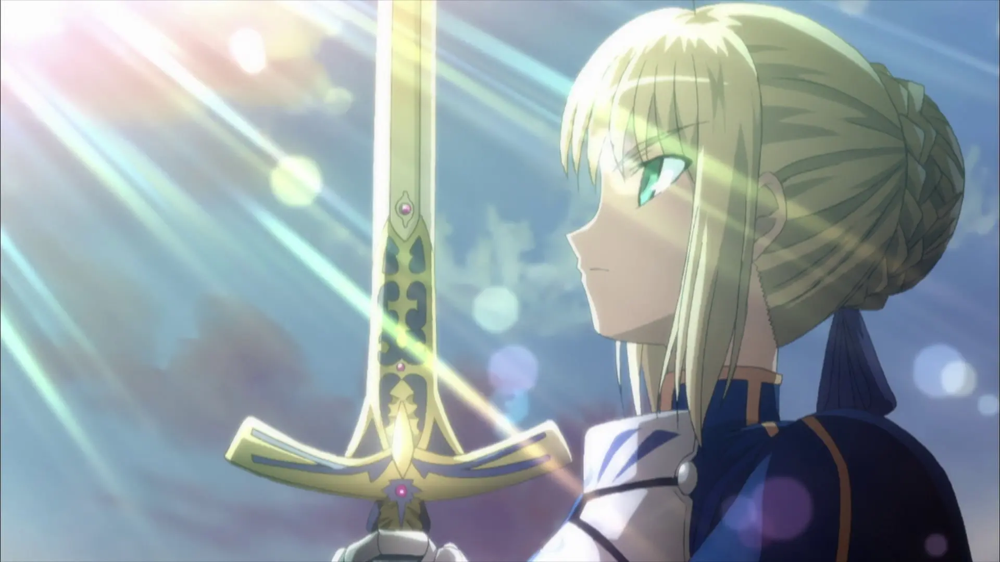

Fate/stay night [Unlimited Blade Works]
「エクスカリバー！」
“誓约胜利之剑！”
Saber 解放宝具，斩向被圣杯污染的柳洞寺。画面为发行平台剧照；集数定位据剧情复核。
画面来源 ↗
封面 · Fate/stay night [Unlimited Blade Works]
EIGHT FRAMES
8 / 8
「エクスカリバー！」
“誓约胜利之剑！”
Saber 解放宝具，斩向被圣杯污染的柳洞寺。画面为发行平台剧照；集数定位据剧情复核。
画面来源 ↗CATALOGUE NOTES
不虚标 4K。本页保存的是检索到的可追溯原图，最高为 1920×1080。老动画公开剧照通常只有 DVD 或 720p 级别，强行放大不会增加真实细节。
短引文，双语呈现。日语与粤语场景保留原句，再给中文译文；中文原作《虹猫蓝兔》则补英文。翻译为本站整理，不替代官方字幕。
定位分级。有可靠记录时标注集数与分钟；只能确认“全剧反复出现”时如实说明，不把网络转述包装成精确考据。